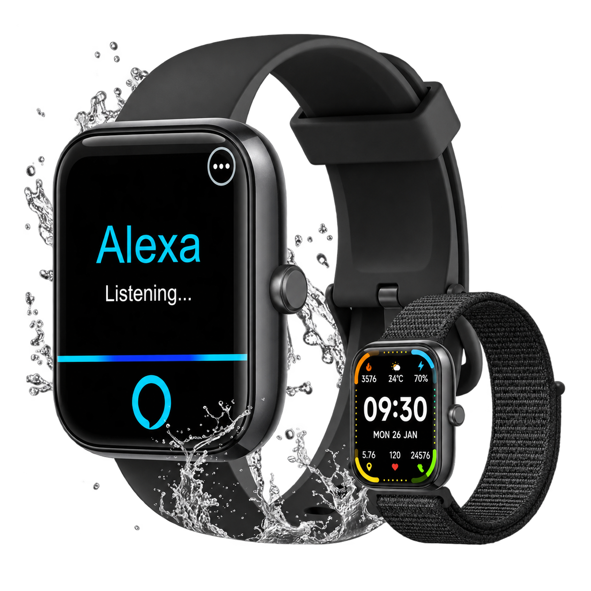

Uma ajuda por voz
Use a Alexa para tarefas como consultar a previsão do tempo e definir alarmes, conforme a configuração com seu celular.
SELEÇÃO GARIMIX / NOVANTE
Smartwatch NOVANTE com chamadas via Bluetooth, notificações e tela de 1,83″ para acompanhar seu dia.

Abre no Mercado Livre. Confira preço, frete e condições.
TECNOLOGIA PARA O DIA A DIA
Use a Alexa para tarefas como consultar a previsão do tempo e definir alarmes, conforme a configuração com seu celular.
Receba notificações e faça chamadas via Bluetooth com o relógio conectado ao celular, com as permissões necessárias ativadas.
Consulte seus passos e registros de atividades na tela touch. Alterne entre as pulseiras para combinar com sua rotina.
ANTES DE ESCOLHER
Os recursos abaixo seguem a descrição do vendedor. Confira os detalhes do modelo no anúncio antes de comprar.
Segundo o vendedor, o relógio é compatível com Android 9.0 ou superior e iOS 9.0 ou superior. Confira também os requisitos atuais do aplicativo usado para conectar o relógio.
Sim, para chamadas e notificações é necessário conectar o relógio ao celular por Bluetooth e liberar as permissões no aplicativo. O modelo não possui rede móvel própria. Confira no anúncio os requisitos para usar a Alexa.
Não. A descrição informa que este modelo não possui GPS independente, Wi-Fi ou NFC.
Segundo o anúncio: relógio, pulseira de silicone, cabo de carregamento magnético e manual. O vendedor também informa uma pulseira de tecido adicional. Confirme os itens da oferta selecionada.
SEU PRÓXIMO PASSO
Veja o preço atual, as avaliações de compradores e o prazo de entrega para seu endereço.
Ver preço no Mercado LivreA compra e o pagamento acontecem no Mercado Livre.